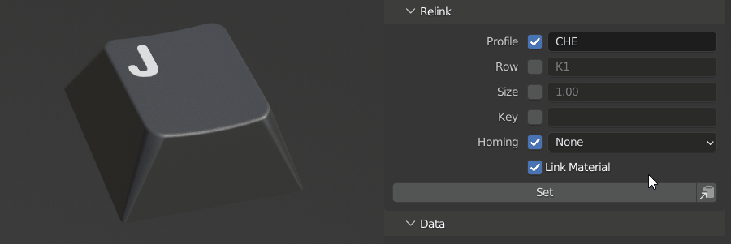

Panneau KRK#

Le panneau KRK se trouve dans la barre latérale (N) et est divisé en quatre sections : Relink, Data, Color et Properties. Les deux dernières ne sont visibles que lorsque les propriétés correspondantes sont disponibles.
Relink#
Relink est un gestionnaire de données d’objet conçu pour permuter rapidement entre les profils de touches, les rangées, les tailles, les touches et les options de repère. Toute option dont la case est cochée sera prise en compte lorsque vous appuyez sur le bouton Set.
Import KLE#
KRK peut importer des fichiers JSON de Keyboard Layout Editor. KLE ne nomme pas ses objets, l’importateur tente donc d’interpréter les touches d’après la légende et la rangée (K1-K6) et définit un objet substituable partout où il le peut. Utilisez ce KLE comme exemple ou comme base pour générer le vôtre :
http://www.keyboard-layout-editor.com/#/gists/f7528ebe1348daab7abc45bc2f662c8a
Profile#

Les profils disponibles et leurs préfixes sont listés dans la collection Profile de l’Outliner, tandis que les rangées et les autres options viendront avec l’habitude. Saisissez l’option dans le champ correspondant (sensible à la casse) avec la case cochée et appuyez sur Set pour définir l’option.
Row#

Étant donné que différents fabricants et profils de touches utilisent différents systèmes de numérotation des rangées, KRK en introduit un autre basé sur la position réelle sur le clavier en partant de l’arrière.
Profil |
Optionnel |
Rangées |
Optionnel |
|---|---|---|---|
KRK |
0 |
1-2-3-4-5-6 |
7 |
Cherry |
0 |
1-1-2-3-4-4 |
5 |
DCS |
5 |
1-1-2-3-4-4 |
|
DSA |
Uniform |
||
DSS |
1-1-2-3-4-3 |
4 |
|
KAM |
Uniform |
||
KAT |
5 |
4-4-3-2-1-1 |
|
OEM |
1-1-2-3-4-4 |
||
SA |
1-1-2-3-4-3 |
4 |
Certains profils ont une première et/ou une dernière rangée interchangeable.
(Uniform dans le tableau signifie que toutes les rangées ont la même hauteur ; saisissez cette valeur telle quelle.)
Size#

Vous pouvez modifier la taille d’une touche en saisissant sa taille en unités sur quatre caractères dans le champ. Si la géométrie de destination est disponible, elle passera à la taille souhaitée.
Key#

Saisissez le nom de la touche dans le champ pour remplacer une touche par une autre. C’est pratique pour passer à une touche à légende interchangeable (Releg), à une touche vierge (Blank) ou à une touche à fenêtre (*_WIN).
Homing#

Vous pouvez modifier le type de touche à repère entre barre/nub/scoop à l’aide de cette liste déroulante et en cliquant sur Set.
Link Material#
Link Material est une option qui permet de reporter le matériau actuellement appliqué vers les données d’objet de destination. Vous pouvez vouloir l’activer ou la désactiver selon le résultat souhaité. Par exemple, si vous passez au profil substituable (PLA), vous voudrez désactiver l’option Link Material afin que le Capsmat ne soit pas reporté sur les objets substituables.
Copy Settings#

À droite du bouton Set se trouve le bouton Copy Settings, qui vous aide à copier le nom des données d’objet dans la liste déroulante des données d’objet pour faciliter la recherche d’une touche particulière.
Les sections suivantes n’affichent des options que pour l’objet actif (mis en surbrillance).
Data#
Data reprend les sections d’affectation des données d’objet et des matériaux du panneau des propriétés pour les rendre plus accessibles.
Recherchez facilement parmi les données d’objet pour remplacer les données d’objet actives par d’autres. Par ex. dupliquez ou instanciez une touche et transformez la copie en switch ou en stabilisateur.

Restore Meshes peut être utilisé lorsqu’une touche ne peut pas être relinkée parce qu’elle a été dupliquée, importée ou collée. Il la reconnecte avec la version du même nom déjà présente dans le fichier. Si vous souhaitez utiliser la version importée comme base, renommez ses données d’objet pour qu’elles ne se terminent pas par .001.

Restore Collections n’apparaît que lorsqu’un asset de collection est sélectionné. Cela vous permet de le restaurer dans un état modifiable.

Le bouton Copy ici lie le matériau de l’objet touche actif à toutes les autres touches sélectionnées tout en ignorant les objets qui ne sont pas des touches.

Color#
Color est un système de gestion des couleurs et des palettes pour vous aider à contrôler les aspects colorimétriques de votre Capsmat. Il ne s’affiche que lorsque des propriétés de couleur sont disponibles. Si vous avez sélectionné une touche qui ne possède pas de propriétés de couleur, le bouton Setup sera disponible pour appliquer toutes les propriétés nécessaires à l’objet touche.

Le sélecteur Custom/Palette permet de basculer entre les workflows de couleur personnalisée et de palette. Les couleurs A-E et les curseurs Palette A-E vous permettent de contrôler ces aspects du Capsmat par objet via les groupes de nœuds de palette. Choisissez vos options et appuyez sur Set pour les propager à tous les objets touche sélectionnés, ou appuyez sur les boutons de copie individuels pour limiter l’opération à une option à la fois. Les boutons Copy et Paste se trouvent en bas pour créer et rappeler un index d’options pour tous les objets sélectionnés.

Properties#
Properties n’est également visible que lorsque des propriétés personnalisées sont disponibles. Pour les câbles USB, il affiche les options de câble telles que la tresse/techflex et la couleur de la gaine thermorétractable des têtes. Si le tapis de bureau est sélectionné, il affiche à la place les options de dimensions et de bordure.